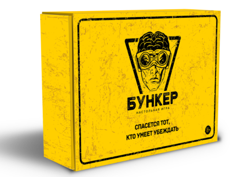

теперь и онлайн
Отправить приглашение в:
Дискуссионная
карточная игра
Более 500
возможных
персонажей
Сюжет
апокалипсиса
Правила
Расписание игр
Дата
10 ноября 2020г (20:00)
Количество свободных мест
5 из 20
Название команды
Выживаторы
Дата
10 ноября 2020г (20:00)
Количество свободных мест
5 из 20
Название команды
Выживаторы
Дата
10 ноября 2020г (20:00)
Количество свободных мест
5 из 20
Название команды
Выживаторы
Часто задаваемые вопросы
Сколько по времени длится партия?
В зависимости от опытности игроков и слаженности игрового процесса средняя партия занимает от полутора до двух часов. Стоит понимать что каждая партия уникальна и разброс во времени может быть существенным.
Сколько по времени длится партия?
В зависимости от опытности игроков и слаженности игрового процесса средняя партия занимает от полутора до двух часов. Стоит понимать что каждая партия уникальна и разброс во времени может быть существенным.
Сколько по времени длится партия?
В зависимости от опытности игроков и слаженности игрового процесса средняя партия занимает от полутора до двух часов. Стоит понимать что каждая партия уникальна и разброс во времени может быть существенным.
Стоимость онлайн-игры
1 партия
500 руб
3 партии
1200 руб
Частый выбор
5 партий
2000 руб
Скидка -30%
Безлимитная
подписка
на 1 месяц